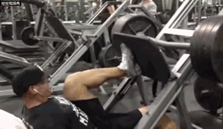
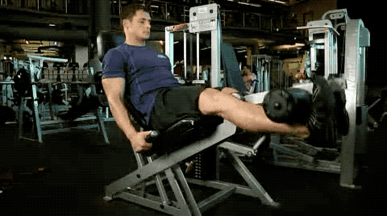
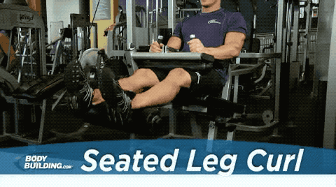
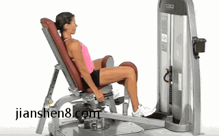

Fitness 腿
1 股四头肌
1.1 史密斯机深蹲
推荐机器: 史密斯机
示意图片:

注意事项:
- 下蹲动作时，吸气用力，使身体上移时，呼气
- 将练习机的杠铃位置调整至低于肩部的高度，然后在杠铃上添加适当重量的杠铃盘。双脚分开站立，相互平行，并保持其间距与肩同宽
- 双手紧握杠铃，且间距尽量张大，同时掌心向前。腿部伸直，使杠铃向上移动离开防护架
- 双腿向前迈步，直到身体微微向后倾斜。双脚分开站立，其间距保持与肩同宽，双脚的趾尖指向前方。弯曲双腿膝关节，角小于90度为止。双腿伸直，脚后跟用力向下，将身体向上移动至初始位置
1.2 倒蹬机|腿举机(Leg Press)
推荐机器: 倒蹬机|腿举机(Leg Press)
示意图片:

- 脚掌在高位: 主要训练臀大肌及膕绳肌
- 脚掌置中，与肩同宽: 主要训练股四头肌
- 脚掌置中，比肩位阔: 主要训练大腿内侧肌肉
- 脚掌置中，心肩位窄: 主要训练大腿外侧肌肉
注意事项:
- 在进行腿举训练时，一定要保证整个躯干（特别是下背稳稳）的靠在椅子上，维持自然的脊椎弧线！动作中不要屁股不要抬离坐垫
1.3 坐姿腿屈伸(Leg Extensions)
示意图片:

注意事项:
- 根据你的身高调整器械杠铃，坐在器械上，后背靠在后背垫子上。
- 将处于低处的那条腿的后部置于垫杆上（小腿下方几公分处），确保垫板圈抵着你的大腿，在双膝上方。然后抓住器械两边的把手，脚趾指向前方（或者你可以使用其他两种姿势），确保双腿在你身前完全伸直。这是动作的起始位置。
- 在呼气的同时，尽可能远的朝你大腿后部牵拉器械杆，弯曲双膝。保持躯干始终不动。在肌肉最紧张的位置停留1秒。
- 在吸气的同时，慢慢回到起始姿势。
- 重复动作至推荐的重复次数。 注意：在这项练习中，不要使用太多重量，摇摆或突然猛拉都可能造成下背部受伤以及腘绳肌撕裂。 变化：既然你可以使用三种脚步姿势，实际上你进行了三种练习。
2 腘绳肌
2.1 坐姿腿弯举(Seated Leg Curl)
示意图片:

注意事项:
- 根据你的身高调整器械杠铃，坐在器械上，后背靠在后背垫子上
- 将处于低处的那条腿的后部置于垫杆上（小腿下方几公分处），确保垫板圈抵着你的大腿，在双膝上方。然后抓住器械两边的把手，脚趾指向前方（或者你可以使用其他两种姿势），确保双腿在你身前完全伸直。这是动作的起始位置
- 在呼气的同时，尽可能远的朝你大腿后部牵拉器械杆，弯曲双膝。保持躯干始终不动。在肌肉最紧张的位置停留1秒
- 在吸气的同时，慢慢回到起始姿势
- 重复动作至推荐的重复次数 注意：在这项练习中，不要使用太多重量，摇摆或突然猛拉都可能造成下背部受伤以及腘绳肌撕裂。 变化：既然你可以使用三种脚步姿势，实际上你进行了三种练习。
3 大腿内收肌群（大收肌、长收肌、短收肌、股薄肌及耻骨肌等）
3.1 坐姿夹腿（Seated Hip Adduction）
推荐机器: 分夹腿机|大腿内收机
示意图片:

注意事项:
- 在大腿内收肌训练机上就座，脚踏踏板。调整大腿挡板的位置，使之紧靠大腿内侧膝盖的部位。如果你使用的器械有重量释放装置，利用这个功能慢慢将重量加在大腿内侧。双手握住座椅两侧的手柄，背部靠紧靠背，以保持身体稳定
- 双腿用力向内夹紧，直到相互接触。为了防止双腿触碰后的反弹，不要用爆发力做这个动作，发力应该相对和缓一些，完成一次动作大约用时2～3秒钟
- 双腿夹紧后，保持2秒钟，然后双腿在重量的拉动下自然外展。此过程要在慢速和充分的控制下进行，否则内收肌受到过度抻拉而受伤的风险就会明显增加
- 双腿外展打开后不要停顿，立即开始并拢双腿，进行下次动作